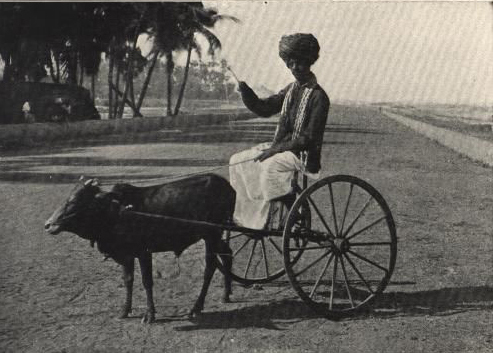
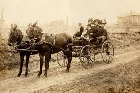

Why Did People Travelled to India from Various Parts of the World in Ancient Times?


In ancient times, people traveled to India for various important reasons, including trade, culture, religion, and learning.
History:
1. Trade: One of the primary motivations for traveling to India was trade. India was known for its rich resources, including spices, textiles, and precious stones. Traders from places like the Roman Empire, Persia, and Southeast Asia sailed to Indian ports to buy these goods, which were highly valued in their own regions.
2. Culture: India’s diverse and vibrant culture attracted many travelers. People came to experience its art, music, dance, and festivals. The exchange of cultural ideas and practices influenced societies worldwide, enriching both Indian culture and the cultures of visitors.
3. Religion: India has been a spiritual hub for thousands of years. Pilgrims traveled to India to visit sacred sites, such as the Ganges River and the temples of Varanasi. Buddhism, which originated in India, also attracted followers from countries like China and Japan, who journeyed to learn about its teachings.
4. Learning: India was home to ancient universities like Nalanda and Takshashila, where scholars from different parts of the world came to study subjects like mathematics, astronomy, and philosophy. This pursuit of knowledge motivated many to travel to India.
Geography:
India’s favorable geographical features facilitated these journeys. The lush, fertile lands and the vast coastline made it an attractive destination. Major trade routes, including the Silk Road and maritime paths through the Arabian Sea, connected India to various regions. These routes allowed for the exchange of goods, ideas, and cultures, making India a central hub in the ancient world.
In summary, ancient travelers were drawn to India for trade, cultural experiences, religious practices, and the pursuit of knowledge, supported by its advantageous geographical location.